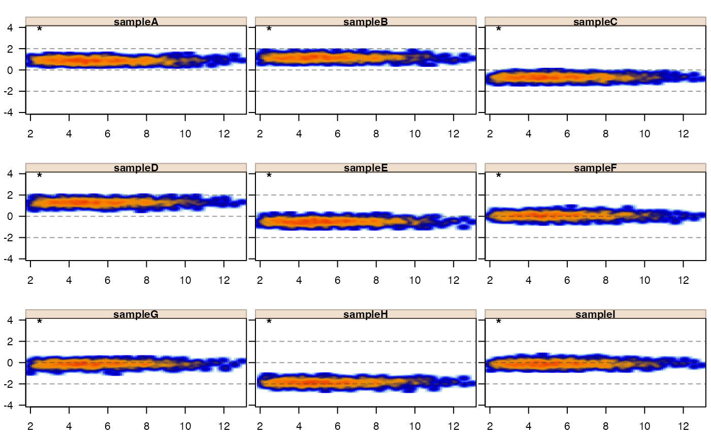
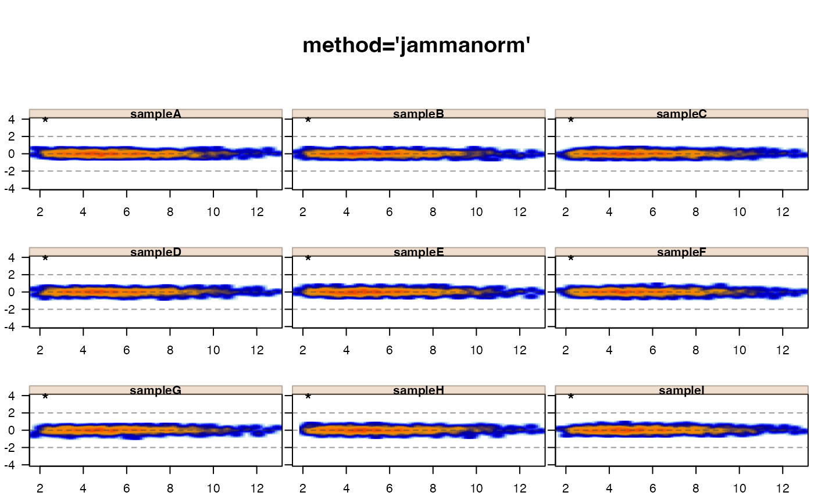
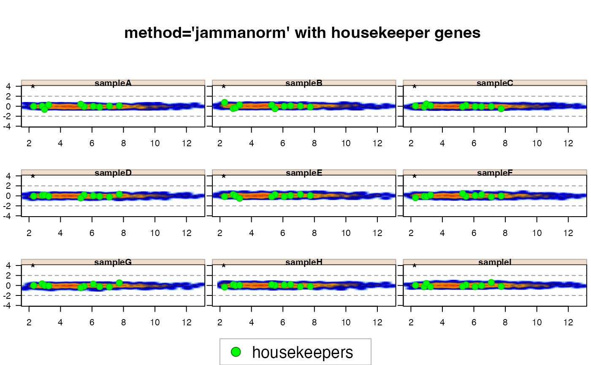
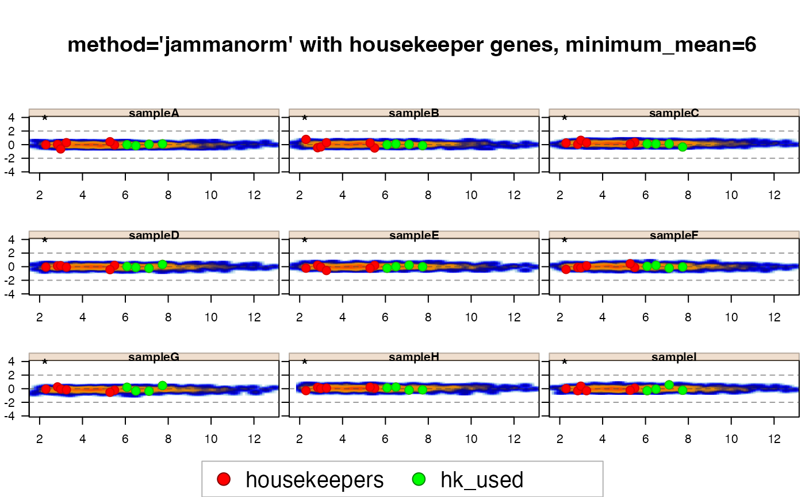
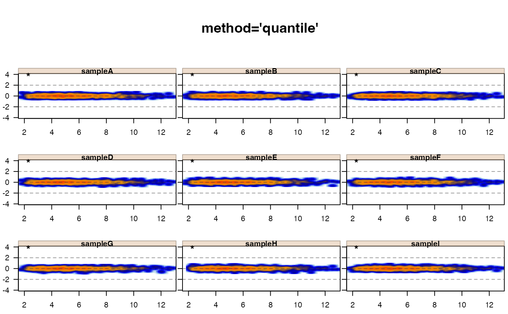
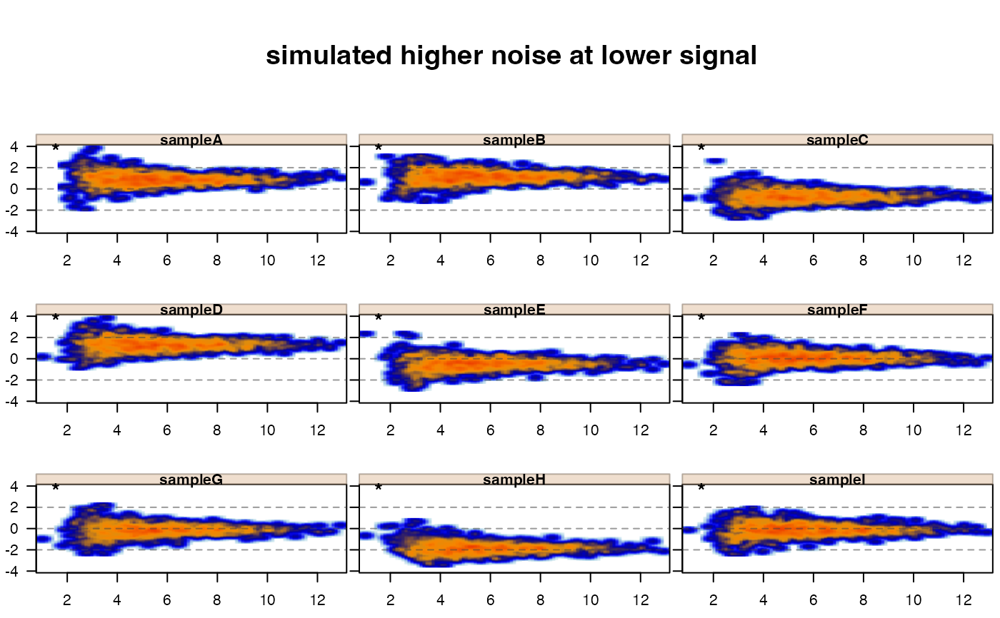
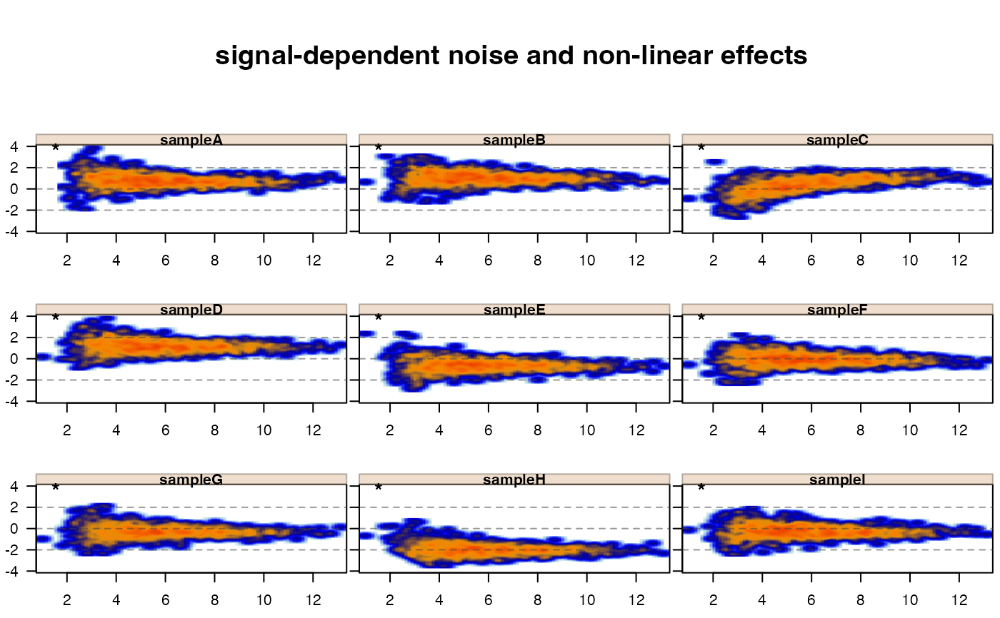
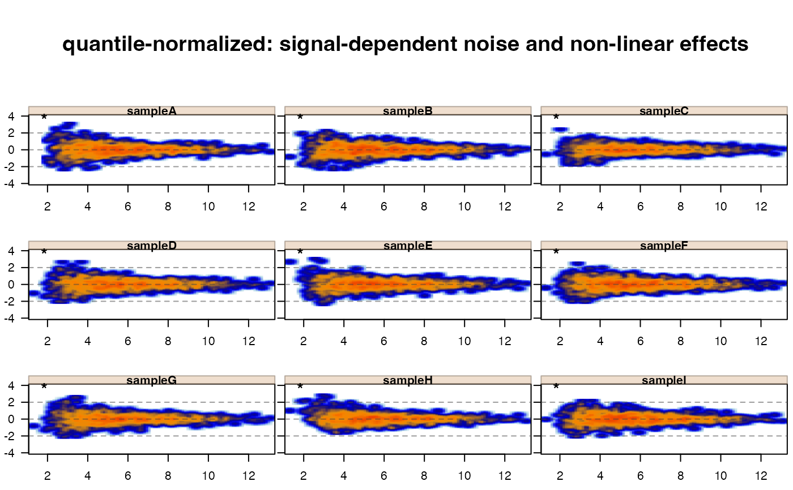

Normalize a numeric data matrix
matrix_normalize(
x,
method = c("quantile", "jammanorm", "limma_batch_adjust"),
apply_log2 = c("ifneeded", "no", "always"),
floor = 0,
enforce_norm_floor = TRUE,
params = list(quantile = list(ties = TRUE), jammanorm = list(controlGenes = NULL,
minimum_mean = 0, controlSamples = NULL, centerGroups = NULL, useMedian = FALSE,
noise_floor = NULL, noise_floor_value = NULL), limma_batch_adjust = list(batch =
NULL, group = NULL)),
normgroup = NULL,
subset_columns = NULL,
debug = FALSE,
verbose = TRUE,
...
)numeric matrix with sample columns, and typically
gene rows, but any measured assay row will meet the assumptions
of the method.
character string indicating which normalization
method to apply.
character string indicating whether to apply
log2 transformation: "ifneeded" will apply log2 transform
when any absolute value is greater than 40; "no" will not
apply log2 transformation; "always" will apply log2 transform.
Note the log2 transform is applied with jamba::log2signed(x, offset=1)
which is equivalent to log(1 + x) except that negative values
are also transformed using the absolute value, then multiplied
by their original sign.
numeric value indicating the lowest accepted numeric
value, below which values are assigned to this floor. The default
floor=0 requires all values are 0, and any values below 0 are
assigned 0. Note that the floor is applied after log2 transform,
when the log2 transform is performed.
logical indicating whether to enforce the
floor for the normalized results, default is TRUE. For example,
when floor=0 any values at or below 0 are set to 0 before
normalization. After normalization some of these values will be
above or below 0. When enforce_norm_floor=TRUE these values
will again be set to 0 because they are considered to be
below the noise threshold of the protocol, and adjustments
are not relevant; also any normalized values below the floor
will also be set to floor.
list of parameters relevant to the method of
normalization. The params should be a list named by the method,
whose values are a list named by the relevant method parameter.
See examples.
character or equivalent vector that defines subgroups
of samples to be normalized indendently of each normgroup. When
NULL then all data is normalized together as default.
The normgroup vector is expected to be in the order of
colnames(x) in the same order.
integer intended for internal use when
normgroups is provided. This argument is used to instruct
each normalization method to use an appropriate subset of
params based upon the subset of columns being analyzed.
logical indicating whether to print verbose output.
numeric matrix with the same dimensions as the
input matrix x. Some normalization methods return
additional information in attributes(x), for example
method="jammanorm" will return the vector of housekeeper
genes used in attr(x, "hk") for normalization of each sample
when supplied with controlGenes values.
This function is a wrapper for several relevant normalization methods that operate on a numeric matrix.
Quantile-normalization performed by
limma::normalizeQuantiles(). This method has one
parameter "ties" passed to limma::normalizeQuantiles(),
the default here ties=TRUE which handles tied numeric
expression values in a robust way to avoid unpredictability
otherwise. This option is especially relevant with expression
count data, where integer counts cause a large number
of values to be represented multiple times.
Median-normalization performed by
jamma::jammanorm(). This method shifts expression
data as shown on MA-plots, so the median expression
is zero across all samples, using only the rows that
meet the relevant criteria.
Some relevant criteria to define rows used for normalization:
controlGenes defines specific genes to use for
normalization, such as housekeeper genes. It may also
be useful to use detected genes here, so the normalization
only considers those genes defined as detected by
the protocol.
minimum_mean sets a numeric threshold and requires
the mean expression (shown on the x-axis of the MA-plot)
to be at least this value.
Note that when both controlGenes and minimum_mean
are defined, both criteria are enforced. So the controlGenes
are also required to have expression of at least minimum_mean.
Also note that all rows of data are normalized by this method,
only the subset of rows defined by controlGenes and minimum_mean
are used to compute the normalization factor.
Batch adjustment performed by
limma::removeBatchEffect() which is intended to apply
batch-adjustment as a form of normalization, but which
does not represent full normalization itself. There are
two relevant parameters: "batch" which is a vector of
batch values in order of colnames(x), and "group"
which is a vector of sample groups in order of colnames(x).
normgroupThe normgroup argument is intended as a convenient method to
apply a normalization method to each independent normgroup.
This situation is especially useful when a study contains
multiple tissue types, or multiple data types, that may not be
appropriate to normalize directly relative to one another.
For example, one could normalize total RNA-seq and nascent 4sU-seq
data independently, without expectation that the two would ever
have a common frame of reference to normalize one relative to another.
However, both may be amenable to "quantile" or
"jammanorm" median normalization.
Similarly, one could normalize each tissue type independently, which may be appropriate when analyzing data that contains very different mammalian tissue organ samples, such as muscle and brain.
It would generally not be appropriate to use quantile normalization across muscle and brain samples, since the overall pattern and distribution of expression values is not expected to be similar. Quantile normalize assumes (and imposes) a common distribution, by adjusting mean expression signal at each quantile to a common mean expression across all samples.
For a rough approximation of cross-tissue normalization, one
could apply "quantile" normalization within each normgroup defined
by tissue type, then apply "jammanorm" median normalization to
apply a linear adjustment of signal across tissue types. The median
normalization does not affect distribution, thus will not affect
intra-tissue contrasts, except by adjusting its overall signal
which may change downstream assumptions regarding signal thresholds.
It is recommended not to compare directly across tissue types. In some cases a two-way contrast may be appropriate, where fold change within one tissue type is compared to the fold change within another tissue type. However, even in that case the two tissue types do not need to be normalized relative to each other upfront - the within-tissue fold change serves as one method of normalizing the observations across tissue types.
Note the floor and enforce_norm_floor have recommended
default values floor=0 and enforce_norm_floor=TRUE.
floor is applied prior to normalization, typically
to minimize effects of low, noisy signal on the normalization
process itself. Specifically, this floor is used to remove negative
values, which may be by-products of upstream signal processing.
"A measured signal at or below the noise floor of a platform
technology is effectively the same as a signal at the noise floor."
enforce_norm_floor is applied after normalization, typically
as a convenience, also to prevent low, noisy signal from
contributing to downstream analysis steps.
These defaults will set any assay value at or below 0 to 0,
and after normalization any values whose input values were
at or below 0 will also be set to 0 to prevent normalizing
a value of 0 to non-zero. Any normalized value at or
below 0 will also be set to 0 to prevent results from
containing negative normalized values.
The assumption for this default is that a value of zero
is not a measurement but represents the lack of a measurement.
Similarly, the intent of floor is a numeric threshold at or
below there is no confidence in the reported measurement, therefore
values at or below this threshold are treated as equivalent
to the threshold for the purpose of downstream analyses.
Some platforms like QPCR for example, have substantially lower
confidence at high CT values, where expression values
using the equation 2^(40-CT) might impose a noise threshold
at expression 32 or lower. This noise threshold for QPCR
means any expression measurement of 32 or lower is as likely
to be 32 as it is to be 2, and therefore any differences
between reported expression of 32 and 2 should not be
considered relevant. Applying floor=32 in this case
accomplishes this goal by setting all values at or below
32 to 32. Of course when using this method matrix_normalize()
the data should be log2 transformed, which means the floor
should also be log2 transformed, e.g. floor=log2(32)
which is floor=5.
One alternative might be to set values at or below zero to NA
prior to normalization, and before calling matrix_normalize().
In this case, only non-NA values will be used during
normalization according to the method being used.
Other jamses stats:
ebayes2dfs(),
handle_na_values(),
run_limma_replicate(),
se_contrast_stats(),
se_normalize(),
voom_jam()
# use farrisdata real world data if available
if (jamba::check_pkg_installed("farrisdata")) {
suppressPackageStartupMessages(library(SummarizedExperiment))
# test matrix_normalize()
GeneSE <- farrisdata::farrisGeneSE;
imatrix <- assays(GeneSE)$raw_counts;
genes <- rownames(imatrix);
samples <- colnames(imatrix);
head(imatrix);
# matrix_normalize()
# normalize the numeric matrix directly
imatrix_norm <- matrix_normalize(imatrix,
genes=genes,
samples=samples,
method="jammanorm",
params=list(minimum_mean=5))
names(attributes(imatrix_norm))
# review normalization factors
round(digits=3, attr(imatrix_norm, "nf"));
# example for quantile normalization
imatrix_quant <- matrix_normalize(imatrix,
genes=genes,
samples=samples,
method="quantile")
names(attributes(imatrix_quant))
}
#> ## (11:53:08) 28Aug2023: matrix_normalize(): Applied floor:0
#> ## (11:53:08) 28Aug2023: matrix_normalize(): Calling jammanorm():
#> minimum_mean:0
#> useMedian:FALSE
#> ## (11:53:08) 28Aug2023: jammanorm(): length(controlGenes):49341
#> ## (11:53:09) 28Aug2023: matrix_normalize(): Applied floor:0
#> [1] "dim" "dimnames"
# simulate reasonably common expression matrix
set.seed(123);
x <- matrix(rnorm(9000)/4, ncol=9);
colnames(x) <- paste0("sample", LETTERS[1:9]);
rownames(x) <- paste0("gene", jamba::padInteger(seq_len(nrow(x))))
rowmeans <- rbeta(nrow(x), shape1=2, shape2=5)*14+2;
x <- x + rowmeans;
for (i in 1:9) {
x[,i] <- x[,i] + rnorm(1);
}
# display MA-plot with jamma::jammaplot()
jamma::jammaplot(x)

# normalize by jammanorm
xnorm <- matrix_normalize(x, method="jammanorm")
#> ## (11:53:09) 28Aug2023: matrix_normalize(): Applied floor:0
#> ## (11:53:09) 28Aug2023: matrix_normalize(): Calling jammanorm():
#> minimum_mean:0
#> useMedian:FALSE
#> ## (11:53:09) 28Aug2023: jammanorm(): length(controlGenes):1000
jamma::jammaplot(xnorm, maintitle="method='jammanorm'")

# normalize by jammanorm with housekeeper genes
hk_genes <- sample(rownames(x), 10);
xnormhk <- matrix_normalize(x,
method="jammanorm",
params=list(jammanorm=list(controlGenes=hk_genes)))
#> ## (11:53:10) 28Aug2023: matrix_normalize(): Applied floor:0
#> ## (11:53:10) 28Aug2023: matrix_normalize(): Calling jammanorm():
#> minimum_mean:0
#> useMedian:FALSE
#> ## (11:53:10) 28Aug2023: jammanorm(): length(controlGenes):10
jamma::jammaplot(xnormhk,
maintitle="method='jammanorm' with housekeeper genes",
highlightPoints=list(housekeepers=hk_genes),
highlightColor="green");

xnormhk6 <- matrix_normalize(x,
method="jammanorm",
params=list(jammanorm=list(
controlGenes=hk_genes,
minimum_mean=6)))
#> ## (11:53:10) 28Aug2023: matrix_normalize(): Applied floor:0
#> ## (11:53:10) 28Aug2023: matrix_normalize(): Calling jammanorm():
#> minimum_mean:6
#> useMedian:FALSE
#> ## (11:53:10) 28Aug2023: jammanorm(): length(controlGenes):10
hk_used <- attr(xnormhk6, "hk")[[1]];
jamma::jammaplot(xnormhk6,
maintitle="method='jammanorm' with housekeeper genes, minimum_mean=6",
highlightPoints=list(housekeepers=hk_genes,
hk_used=hk_used),
highlightColor=c("red", "green"));

# normalize by quantile
xquant <- matrix_normalize(x, method="quantile")
#> ## (11:53:10) 28Aug2023: matrix_normalize(): Applied floor:0
jamma::jammaplot(xquant,
maintitle="method='quantile'")

# simulate higher noise for lower signal
rownoise <- rnorm(prod(dim(x))) * (3 / ((rowmeans*1.5) - 1.5));
xnoise <- x;
xnoise <- xnoise + rownoise;
jamma::jammaplot(xnoise,
maintitle="simulated higher noise at lower signal");

# simulate non-linearity across signal
# sin(seq(from=pi*4/10, to=pi*7/10, length.out=100))-0.8
rowadjust <- (sin(pi * jamba::normScale(rowmeans, from=3.5/10, to=5.5/10)) -0.9) * 20;
xwarp <- xnoise;
xwarp[,3] <- xnoise[,3] + rowadjust;
jamma::jammaplot(xwarp,
maintitle="signal-dependent noise and non-linear effects");

# quantile-normalization is indicated for this scenario
xwarpnorm <- matrix_normalize(xwarp,
method="quantile");
#> ## (11:53:10) 28Aug2023: matrix_normalize(): Applied floor:0
jp <- jamma::jammaplot(xwarpnorm,
maintitle="quantile-normalized: signal-dependent noise and non-linear effects");
